Bil At
Dönen tahtaya ok at. Vurduğun sayı sorunun zorluğunu, doğru cevap puanını belirler.
- 8 alanda 1.400'den fazla soru
- 1-4 kolay, 5-8 orta, 9-12 zor
- Haftalık sıralama
İki mod, tek oyun: dönen tahtaya ok atıp soru bildiğin Bil At ve bozkırda 3D okçuluk Ok Meydanı.
Ücretsiz · Hesap gerekmez · İnternetsiz de oynanır
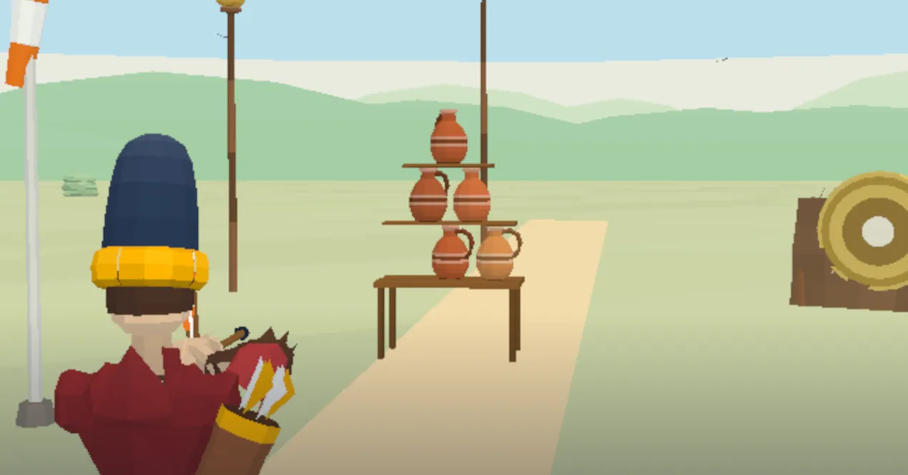
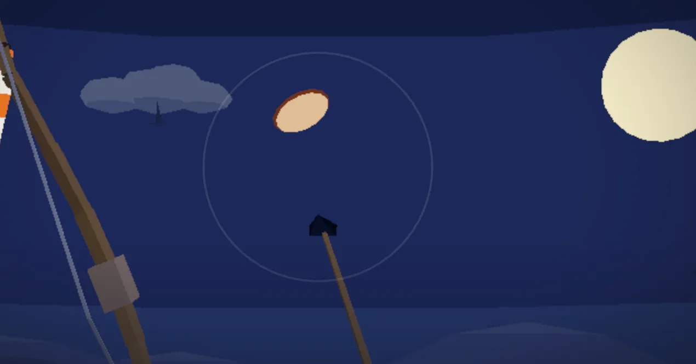
Dönen tahtaya ok at. Vurduğun sayı sorunun zorluğunu, doğru cevap puanını belirler.
Bozkırda üç tur. Yayını ger, nefesini tut, testileri ve uçan tabakları vur.
İkisi de ana menüde yan yana. Ücretsiz, internetsiz de oynanır.
Yay gibi parmağını geriye çek ve bırak, ok ters yöne uçar. Ne kadar çekersen o kadar güçlü atarsın. Tahta döner, biraz önden nişan al.
Vurduğun sayı sorunun zorluğunu seçer.
20 saniye, dört şık. Doğru cevap: sayı × 10 puan. Yanlış cevap ya da biten süre 3 canından birini götürür.
Sadağında 6 ok var; ıskalarsan bir ok gider. Oklar biterse bir can gider, sadak dolar. Zor dilimdeki (9-12) soruyu bilirsen sadağına 1 ok eklenir. Her 3 doğruda seviye atlarsın: sadak dolar, tahta hızlanır.
Sorular arasında tahta ile okçunun arasından ara sıra bir hedef süzülür. Okun içinden geçerse ödül senin, ok da gitmez.
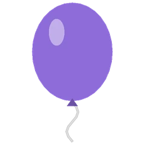
Patlat, sadağına bir ok eklensin.
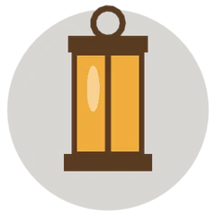
Sıradaki sorunun puanı iki katına çıkar.
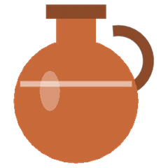
YakındaKır, içinden üç üzerlik dökülsün.
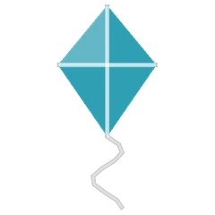
Küçük ve hızlı, vurana %50 Joker.
Iskalarsan sadece okun gider, ceza yok. Bonusla kazandığın puanlar sıralamada da sayılır.
Ger, nişan al, bırak.
Nefes ve rüzgâr.
3 tur, her turda 10 ok.
Testi kulesi, kabak ve puta.
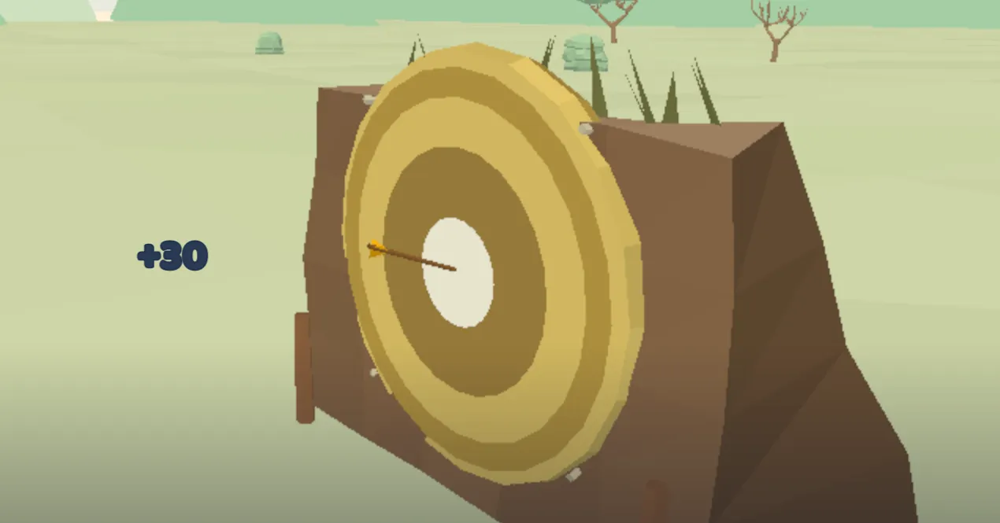
Asılı testiler, kayan kızak, fenerler ve uzak puta.
Tabaklar ve testiler, oklar bitene kadar uçar.
Kolaydan zora, 8 alanda 1.400'den fazla Türkçe soru. İstersen tek alan seç, istersen Karışık oyna. Yeni alanlar yolda.
Yakında: Edebiyat, Doğa ve Hayvanlar, Müzik, Teknoloji ve daha fazlası.
Gökyüzü günün saatine uyar: gündüz mavi, akşamüstü gün batımı, gece yıldızlı. Ok Meydanı'nda da gündüz ve gece turu var.
Bir gökyüzüne dokun, site de değişsin.
Haftalık ve tüm zamanlar listesi. Takma adını seç, yarışa gir. Google Play Oyunlar açıksa skorların telefon değişse de seninle kalır.
İndirdiğin sorular cihazında kalır. Çevrimdışıyken aldığın skor, bağlantı gelince sıralamaya gönderilir.
Zor bir soru mu geldi? %50 Joker iki yanlış şıkkı siler. Canların bitince Devam et ile bir can alıp kaldığın yerden sürdürürsün. İkisi de istersen kısa bir reklamla açılır.
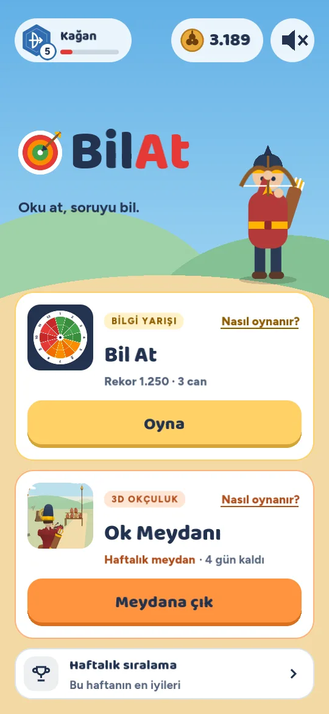


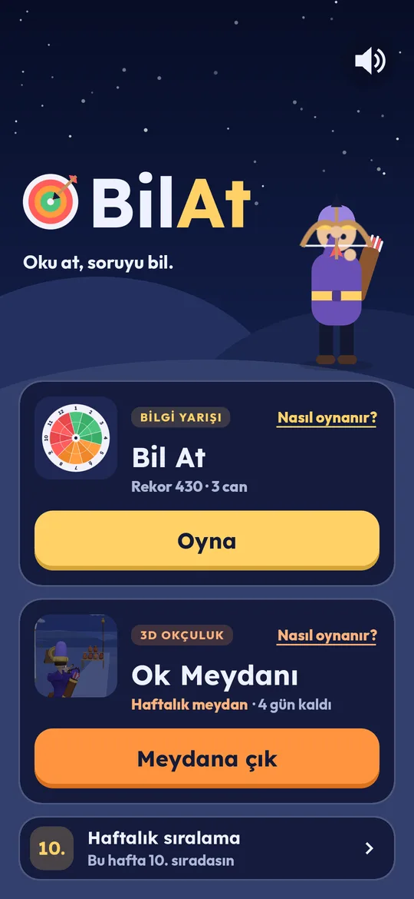
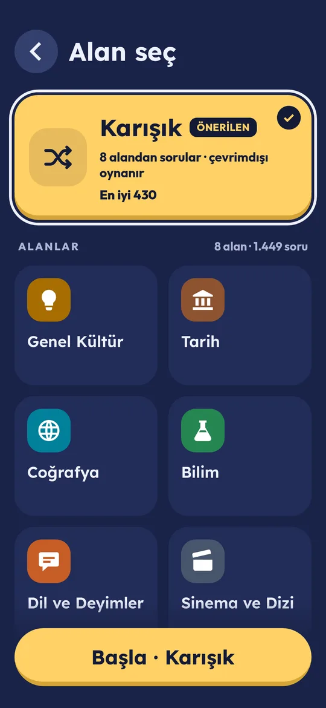
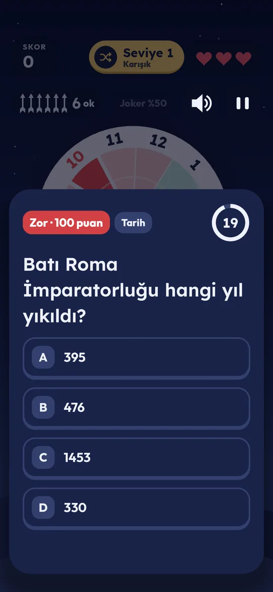
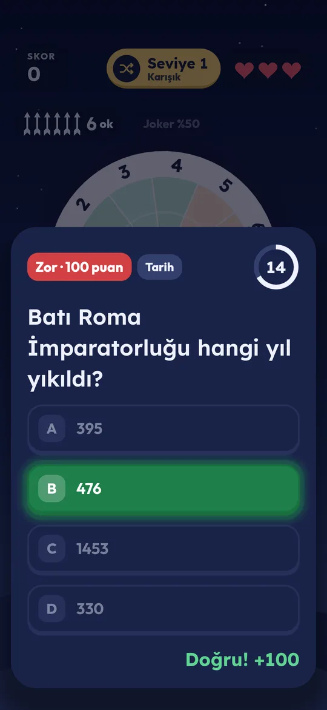
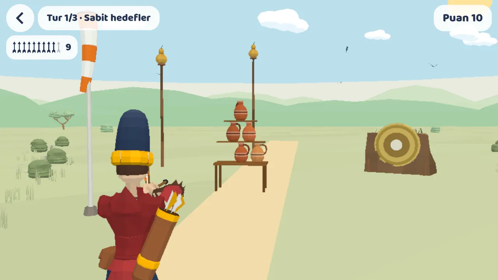
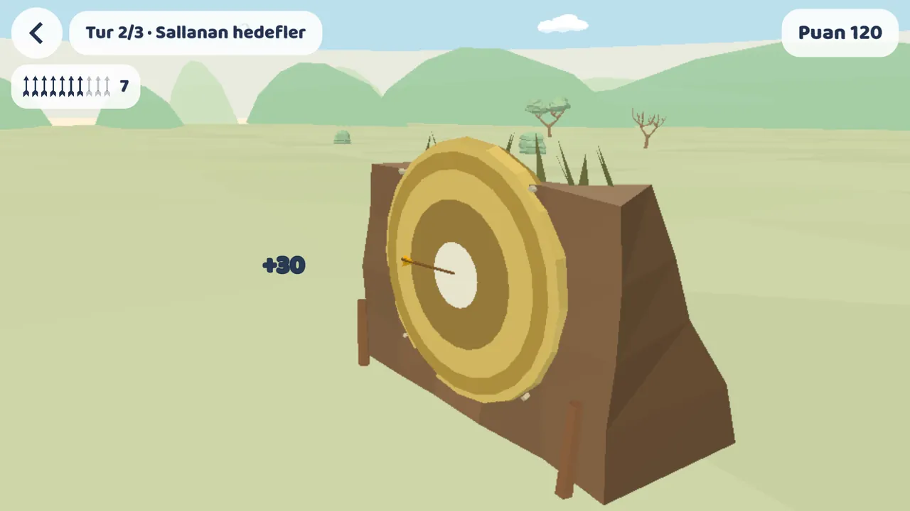
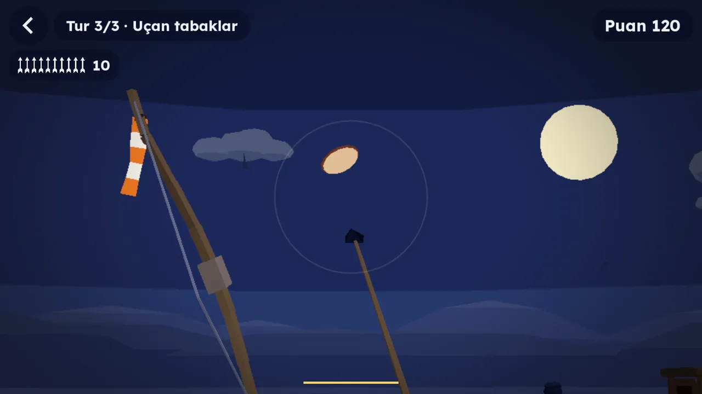
Evet. Oyun ücretsizdir ve reklamlarla desteklenir. Uygulama içi satın alma yoktur. Reklamı yalnızca sen seçince izlersin: oyun bitince Devam et ya da %50 Joker için.
Evet. Oyunla gelen sorular ve indirdiğin sorular cihazında kalır. Çevrimdışıyken aldığın skor, bağlantı gelince sıralamaya gönderilir.
Hayır, ayrı hesap açmazsın. Sıralama için bir takma ad seçmen yeter. Telefonunda Google Play Oyunlar açıksa takma adın ve skorların ona bağlanır; telefon değişse de seninle kalır.
iPhone sürümü yakında App Store'da. Şimdilik Google Play'den Android için indirebilirsin.
destek@bilat.app adresine soruyu ve doğru cevabı yaz, düzeltelim.